Pictures
Recent highlights from CTTC members at club and at tournaments.
- April 15, 2026 - Graham wins his first round robin matches
- March 14, 2026 - Sacramento Open: Marko wins 1st place, Men's U1800
- 2025 US Open Championships, Las Vegas: Jay medals in U1300 Adult Division
- 2024 USATT US Open: Jafar and Rich medal in Men's 75 Doubles
- Sonoma Wine Country Senior Games: Paul, Sam, Rich, Ron, Tom, Adrian, and Laura all medal
- Adrian retires
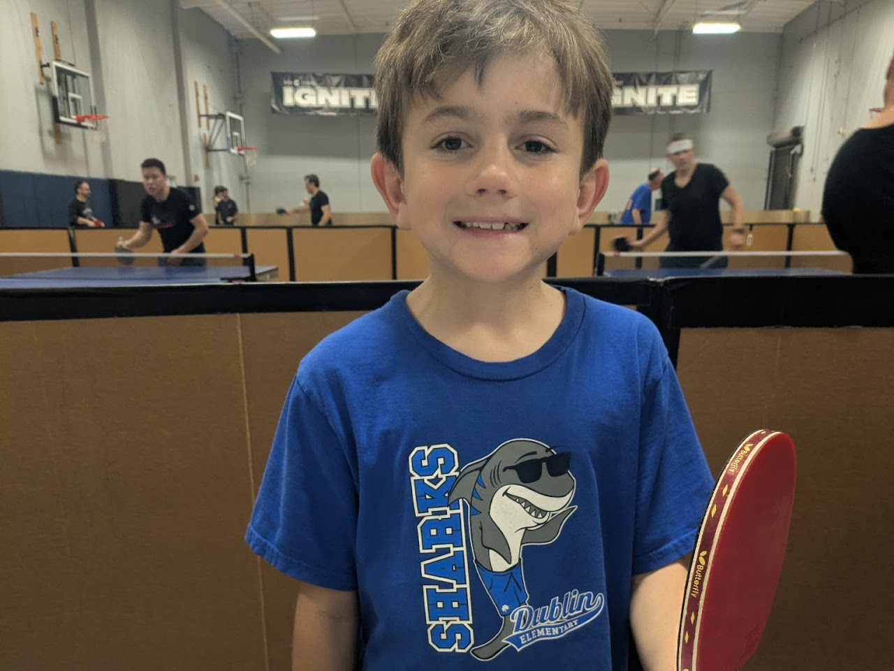
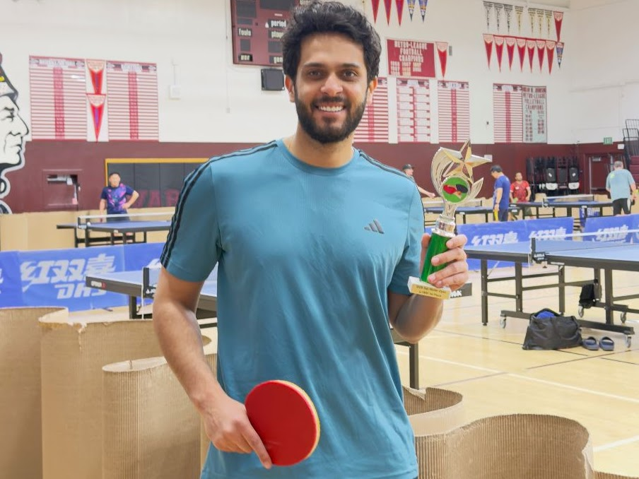
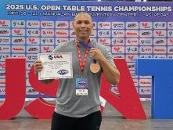
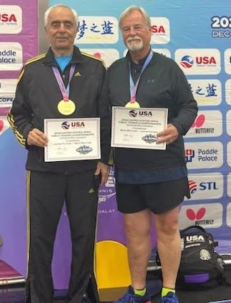
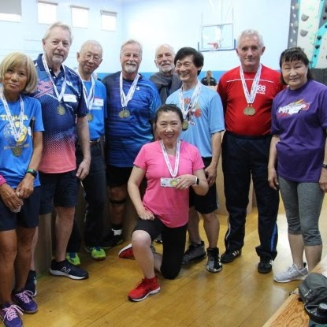
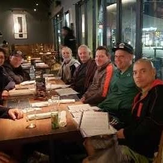
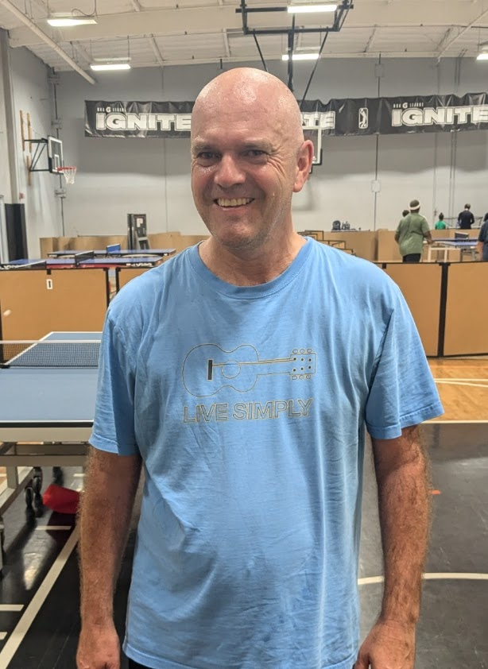
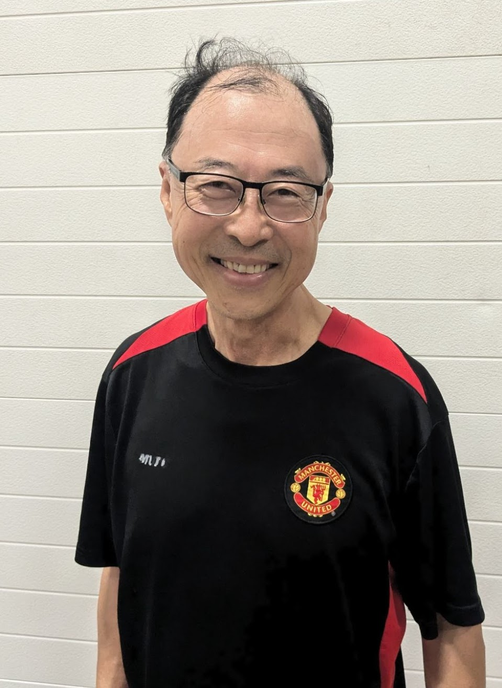
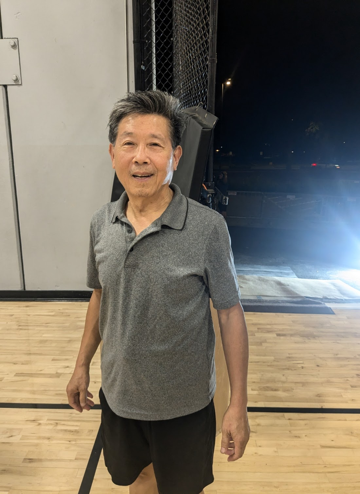
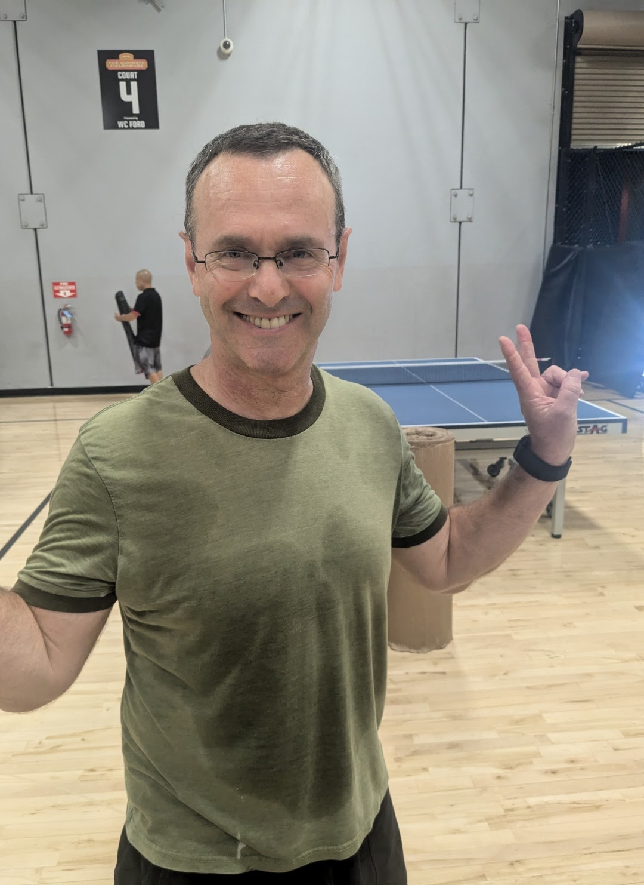
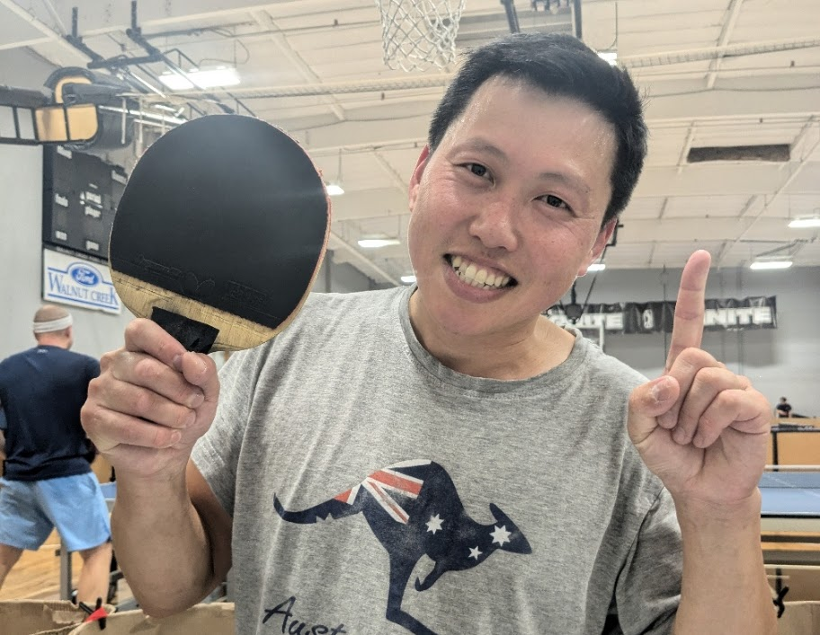
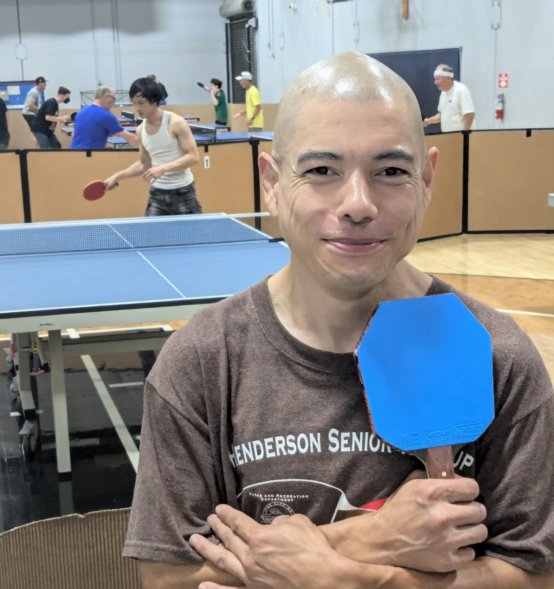
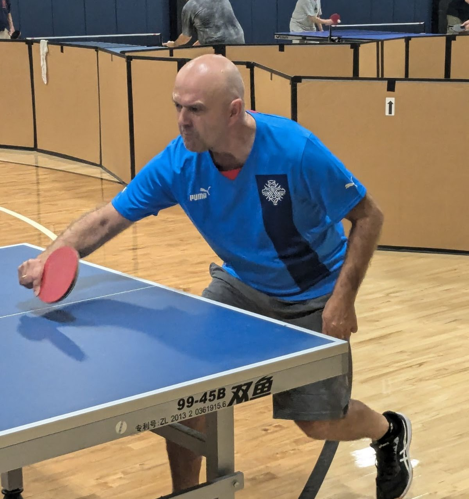
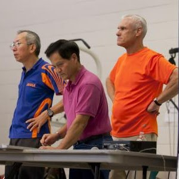
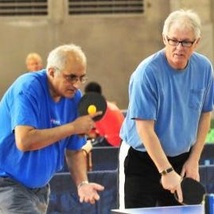
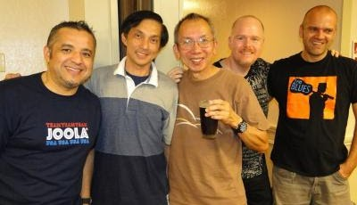
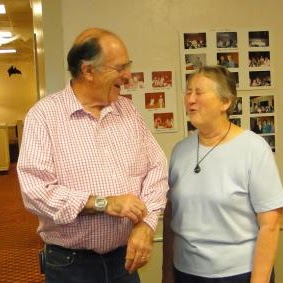
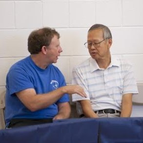
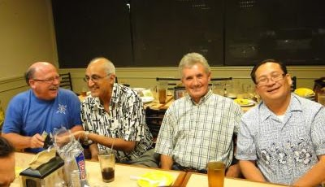
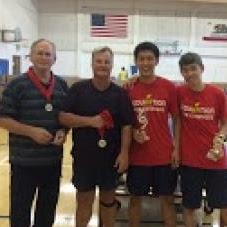
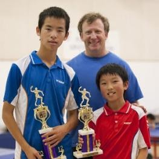
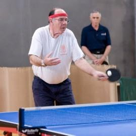
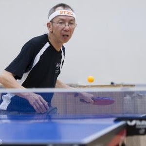